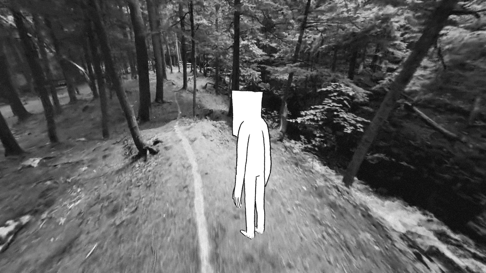
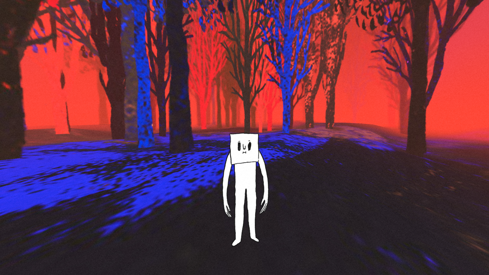

Way to Go
Vincent Morisset, Caroline Robert, Édouard Lanctôt-Benoit and Philippe Lambert
- 
- 
Click to Experience
Description
Way to Go is an interactive experience for human beings between 5 and 105 years old. Maybe it lasts six minutes; maybe it lasts forever. Way to Go is ready for your web browser and willing to go VR, if you’re Rift-y. It is like a gray squirrel balanced on a branch, fearless. Made by Vincent Morisset, Caroline Robert, Édouard Lanctôt-Benoit and the studio AATOAA, visionary creators of BLA BLA and Arcade Fire’s award-winning Just A Reflektor. Produced by the National Film Board of Canada, co-produced by France Televisions, with a mesmerizing soundtrack by Philippe Lambert, it is a game and a solace and an alarm, a wake-up call to the hazards of today. At a moment when we have access to so much, and see so little, Way to Go will remind you of all that lies before you, within you, in the luscious, sudden pleasure of discovery.
Bios
Vincent Morisset was born in Montreal. Director, programmer, inventor, he is looking for new ways to tell stories. Since the release of the Funeral album, Vincent has been collaborating with Arcade Fire. The interactive video for Neon Bible is considered by many as the !rst interactive music video. Vincent also directed their documentary Miroir noir and came up with the idea of the Synchronised Artwork for the album “The Suburbs” which change the way we present visuals related to digital albums. His work has been showcased in Wired, Creative Review, Pitchfork, Rolling Stones, Le Monde and The Guardian among others. Creativity Magazine, Shots and Boards selected Vincent in their directors to watch list. Recently, Vincent directed a dance activated interactive video for Arcade Fire (sprawl2.com), BLA BLA (blabla.nfb.ca), an experimental !lm for computer and INNI, a feature !lm on the icelandic band Sigur Ros. Vincent is founder of AATOAA, an entity specialized in open-minded projects.
Compatibility
| Chrome | Firefox | Safari | |
|---|---|---|---|
| Desktop (360) | ✔ | ✔ | ✔ |
| Mobile Device | ✔ | ✔ | ✔ |
| Oculus Rift | ✔(Chromium) | ✔(Nightly) | |
| HTC Vive | ✔(Chromium) | ✔(Nightly) |
Note: You may need to do some special setup for your browser to work with a VR headset like the Oculus Rift or HTC Vive.